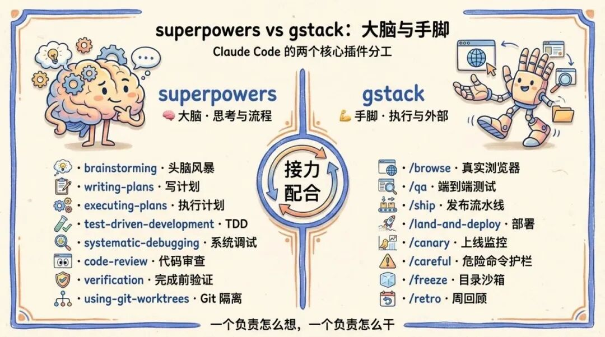
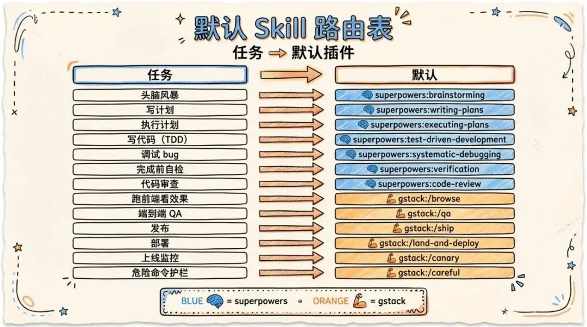
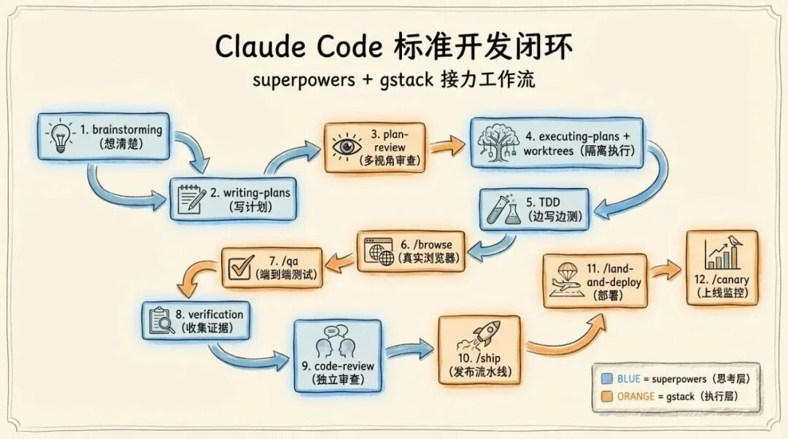

一个负责怎么想，一个负责怎么干。两个插件一组合，Claude Code 才算真正变成"工程师"。

superpowers + gstack 整体架构
如果你也在用 Claude Code，大概率装过一堆插件：oh-my-claudecode、feature-dev、code-review、ralph-loop、document-skills……装着装着就发现一个尴尬的事实——它们的功能严重重叠。
写计划有四五个 skill 在抢，做代码审查有三个版本，调试模式两套并行。结果就是每次 Claude Code 启动时随机匹配一个 skill，行为完全不可复现。
折腾了一段时间之后，我把插件砍到只剩两个核心：superpowers 和 gstack。一个管"思考与流程"，一个管"执行与外部世界"。没有重叠，没有冲突，分工清晰得像教科书。
这篇文章把这套配置完整讲清楚：为什么是这两个，怎么装，怎么配，怎么配合用。
为什么是这两个：大脑和手脚
先说一个核心观察：一个真正能干活的 AI 工程师，需要两种截然不同的能力。
第一种是"想清楚"的能力：拿到需求要会拆解，写代码前要会规划，遇到 bug 要会系统化排查，写完代码要会自检和审查。这是流程层、方法论层。
第二种是"动得了"的能力：要能真的打开浏览器看页面有没有渲染对，要能跑端到端测试验证功能，要能 ship 到生产环境，要能在上线后监控有没有出错。这是执行层、外部世界层。
superpowers 是大脑，gstack 是手脚。前者教 Claude Code 怎么想，后者让 Claude Code 真的动起来。
把这两件事分给两个不同的插件做有个巨大的好处：没有功能重叠，没有 skill 抢匹配。superpowers 不碰浏览器，gstack 不抢计划撰写，两者井水不犯河水，配合起来异常顺滑。
superpowers 与 gstack 能力分工对比图
superpowers 是什么：一套完整的工程方法论
superpowers 是 Jesse Vincent 团队做的一套 skill 集合，本质上是把"高质量软件工程的工作流"编码成 Claude Code 能直接执行的 skill。它的核心理念只有一句话：把人类工程师做事的方式，变成 AI 能严格遵守的流程。
具体它管哪些事？
计划与思考层：
- ●
brainstorming—— 任何创造性工作开始前的强制头脑风暴 - ●
writing-plans—— 把模糊需求变成可执行的实施计划 - ●
executing-plans—— 严格按计划执行，带 review checkpoint
编码与调试层：
- ●
test-driven-development—— 强制 TDD，先写测试再写实现 - ●
systematic-debugging—— 系统化调试方法论，禁止瞎猜 - ●
using-git-worktrees—— 用 worktree 隔离工作，不污染主分支 - ●
dispatching-parallel-agents—— 并行子代理调度
审查与验证层：
- ●
verification-before-completion—— 声明完成前必须收集证据 - ●
requesting-code-review—— 请求独立 reviewer - ●
receiving-code-review—— 接收审查意见的标准流程 - ●
finishing-a-development-branch—— 分支收尾的完整 checklist
最关键的一条理念是：作者和审查者绝不在同一个上下文里互评。Claude 在写完代码后不能立刻自我审查，必须新开一个 reviewer 通道——因为同一个上下文里 Claude 已经"代入"了作者视角，自己审查自己只会找到自己想找的问题。
这个设计听起来啰嗦，但用过一段时间之后你会发现：superpowers 写出来的代码质量明显比裸用 Claude Code 高一个档次，因为它强制了"先想后做、先测后写、独立审查"这一整套规矩。

superpowers 工作流示意图
gstack 是什么：让 Claude Code 真的能动手
如果说 superpowers 是方法论，那 gstack 就是工具箱。它解决的是 superpowers 完全不碰的问题：怎么和真实的外部世界打交道。
gstack 的核心能力可以分成四块：
浏览器与 QA：
- ●
/browse—— 真实的 headless Chromium，可以打开任何 URL、点按钮、看 DOM、截图。这是 Claude Code 看见前端世界的唯一靠谱方式 - ●
/qa—— 端到端 QA 测试，自动跑应用、发现 bug、修 bug、再跑一遍 - ●
/qa-only—— 只测试不修复，输出结构化报告 - ●
/qa-design-review—— 从设计师视角做 QA，找视觉一致性问题
Ship 与 Deploy：
- ●
/ship—— 完整的发布流水线：跑测试 → review diff → bump 版本 → 更新 changelog → commit → push → 创建 PR - ●
/land-and-deploy—— 合 PR、等 CI、等部署、验证生产环境 - ●
/setup-deploy—— 自动检测 Fly.io / Render / Vercel / Netlify 等平台并配置
上线后监控：
- ●
/canary—— 上线后观察生产环境的控制台错误、性能回归、页面失败 - ●
/benchmark—— 性能基线建立和回归检测，盯着 Core Web Vitals
安全护栏：
- ●
/careful—— 拦截危险命令（rm -rf、DROP TABLE、force-push、git reset --hard） - ●
/freeze—— 把可编辑范围限定在某个目录，调试敏感代码时用 - ●
/guard——/careful+/freeze的组合拳
多视角 plan review：
- ●
/plan-ceo-review—— CEO 视角的产品 review，会挑战范围和优先级 - ●
/plan-eng-review—— 工程 manager 视角，盯架构、数据流、边界 case - ●
/plan-design-review—— 设计师视角，盯视觉一致性和交互细节
gstack 提供的这些能力，superpowers 一个都没有。砍掉 gstack，你就没办法让 Claude Code 看见真实的浏览器、跑真实的 QA、执行真实的部署。
gstack 能力四象限图
安装：两条命令搞定
两个插件都在公开的 marketplace 里，用 Claude Code 的插件命令就能装。
第一步：安装 superpowers
claude plugin install superpowers@superpowers-marketplace claude plugin install superpowers-chrome@superpowers-marketplace claude plugin install superpowers-lab@superpowers-marketplace claude plugin install superpowers-developing-for-claude-code@superpowers-marketplace
四个包是 superpowers 的完整套装。superpowers 是核心方法论，superpowers-chrome 是底层 CDP 浏览器控制（gstack 不够用时的兜底），superpowers-lab 是 Slack/Windows VM/tmux 等实验工具，superpowers-developing-for-claude-code 是写 Claude Code 插件本身用的工具。
第二步：安装 gstack
gstack 通常通过它自己的 marketplace 装：
claude plugin marketplace add gstack claude plugin install gstack
具体命令以 gstack 项目主页的最新说明为准。
第三步：清掉冲突的旧插件（如果有）
如果你之前装过下面这些，建议一并卸掉，避免和 superpowers/gstack 抢匹配：
claude plugin uninstall oh-my-claudecode@omc claude plugin uninstall feature-dev@claude-plugins-official claude plugin uninstall code-review@claude-plugins-official claude plugin uninstall ralph-loop@claude-plugins-official claude plugin uninstall ralph-wiggum@claude-code-plugins claude plugin uninstall document-skills@skills
第四步：配置 CLAUDE.md
这是最关键的一步。光装好插件不够，还得在 ~/.claude/CLAUDE.md 里写清楚两者的分工裁决，否则 Claude Code 还是会乱匹配。下面给一份现成的配置可以直接抄。
安装四步流程图
核心配置：CLAUDE.md 模板
把下面这段直接放进 ~/.claude/CLAUDE.md：
# Claude Code 配置：superpowers + gstack 主干由两个插件组成： - superpowers —— 思考与流程层（plan/brainstorm/debug/TDD/review/verify） - gstack —— 执行与外部世界层（browser/QA/ship/deploy/canary/护栏） 类比：superpowers 是大脑，gstack 是手脚。 ## 核心原则 1. 流程归 superpowers：所有 plan、brainstorm、debug、TDD、verify、 code review 默认走 superpowers。 2. 执行归 gstack：所有浏览器操作、QA 测试、ship、deploy、canary、 retro 走 gstack。 3. 独立 reviewer 通道：作者和审查者绝不在同一上下文里互评。 4. 证据优先：声明完成前必须收集可验证的证据。 5. 遇到歧义先 brainstorm。 ## 浏览器规则 /browse 是唯一的浏览器入口。禁止使用 mcp__claude-in-chrome__* 和 mcp__computer-use__* 来操作浏览器。 ## 不要重复造轮子 下列能力只走 superpowers： - plan / brainstorm / writing-plans / executing-plans - TDD / debugging / verification - code review（请求和接收） - subagent / parallel dispatch - worktrees 下列能力只走 gstack： - 浏览器、QA、ship、deploy、canary、retro、护栏
这段配置的核心作用是把模糊的 skill 匹配规则变成明确的裁决。Claude Code 在遇到"做个计划"这种泛指令时，会按这个表查表执行，而不是随机匹配。
默认 skill 路由表
下面这张表是日常工作的"地图"。任何任务先查表，知道默认走哪个 skill。
这张表的本质是把模糊的"做某事"映射到确定的 skill。表里没有的任务才需要现场判断。
默认 skill 路由表可视化
标准开发闭环：一条龙走完
讲了这么多，最关键的是看一遍完整的开发闭环到底长什么样。下面是从一个想法到上线的标准路径：
[想法] ↓ brainstorming ← 想清楚要不要做、做成什么样 ↓ writing-plans ← 写一份可执行的实施计划 ↓ (可选) /plan-eng-review / /plan-ceo-review ← 多视角审查计划 ↓ executing-plans + using-git-worktrees ← 在隔离 worktree 里执行 ↓ test-driven-development ← 边写边测 ↓ /browse 或 /qa ← 真实环境验证功能 ↓ verification-before-completion ← 收集完成证据 ↓ requesting-code-review ← 独立 reviewer 通道 ↓ finishing-a-development-branch ← 分支收尾 ↓ /ship ← 跑测试、bump 版本、push、PR ↓ /land-and-deploy ← 合 PR、等 CI、等部署 ↓ /canary ← 监控上线后状态 ↓ /document-release ← 写发布文档 ↓ [完成]
注意几个关键的交接点：
交接点 1：writing-plans → executing-plans。计划写完不会自动开干，需要显式执行。中间可以插入 plan review。
交接点 2：executing-plans → /browse 或 /qa。代码写完了，下一步必须用真实浏览器或 QA 验证。superpowers 自己不会跑浏览器，这里必须让 gstack 接手。
交接点 3：verification → requesting-code-review。自检和他人审查是两个独立的 pass，不能合并。verification 是作者自己确认证据齐全，code-review 是另开一个 reviewer 上下文做独立判断。
交接点 4：finishing-a-development-branch → /ship。分支收尾归 superpowers，发布流水线归 gstack。这两个 skill 之间是平滑衔接的。
整个闭环最大的特点是：superpowers 和 gstack 像接力赛一样交替工作，谁也不会越界做对方的事。

标准开发闭环时序图
核心原则的背后逻辑
前面 CLAUDE.md 里列了 5 条核心原则，这里展开解释一下为什么是这 5 条。
原则 1：流程归 superpowers
为什么不能让 gstack 也做计划？因为 gstack 的 plan-*-review 是"批判性审查"工具，不是计划撰写工具。让一个 reviewer 同时充当 author，等于让法官自己写起诉书——视角错位，质量必差。
原则 2：执行归 gstack
为什么不能让 superpowers 自己跑浏览器？因为 superpowers 的 chrome 子包用的是底层 CDP，操作粒度太细，没有 QA 闭环。gstack 的 /browse 和 /qa 是经过封装的高层操作，包含了"打开 → 验证 → 截图 → 报告"完整链路。用对工具比用上工具更重要。
原则 3：独立 reviewer 通道
这条最反直觉，但最重要。Claude 在写完一段代码后立刻被要求审查，会下意识维护自己的工作——找到的问题会偏向"无关紧要的小瑕疵"，而真正的设计缺陷会被自动忽略。新开一个 reviewer 上下文相当于换一个人，这个人没有"我刚写了这段代码"的心理负担，找问题的视角完全不同。
原则 4：证据优先
不要相信 Claude 说"这个功能已经实现完毕"。要看：测试有没有通过？/browse 有没有截图证明页面正常？/qa 报告里有没有红色警告？没有证据的完成 = 没完成。verification-before-completion 这个 skill 就是强制把这条变成肌肉记忆。
原则 5：遇到歧义先 brainstorm
这条是性价比最高的一条。很多时候用户的需求里有 30% 的隐含假设，直接开干等于赌博。花 5 分钟 brainstorming 把假设全部摊开来确认，能省后面 5 小时的返工。
五大核心原则关系图
实战示例：从需求到上线
光看路由表和原则有点抽象，看一个真实案例。假设用户说："给我们的官网加一个深色模式切换。"
第 1 步：brainstorming
Claude Code 启动 superpowers:brainstorming，问几个关键问题：是只切根色板还是要逐元素调？要不要持久化用户偏好？跟系统主题怎么联动？
第 2 步：writing-plans
把答案变成一份实施计划：先加 CSS variables → 再加 ThemeProvider → 再加 toggle 组件 → 再做持久化 → 最后 e2e 测试。每一步都标注可验证的产物。
第 3 步：plan-design-review（可选但推荐）
调用 gstack:/plan-design-review 让设计师视角审查一下：颜色对比度够不够？切换动画是否突兀？暗色下的图片处理怎么办？
第 4 步：executing-plans + TDD
在新 worktree 里执行计划，每个改动都先写测试。
第 5 步：/browse 验证
调用 gstack:/browse 打开本地开发服务器，手动切换主题、看每个页面的渲染、截图存档。
第 6 步：/qa 跑端到端
用 gstack:/qa 跑一遍主流程，确认深色模式不破坏现有功能。
第 7 步：verification-before-completion
收集所有证据：测试报告、截图、QA 报告。Claude 要在这一步明确说"我有 X 个证据证明完成"，而不是"我觉得应该完成了"。
第 8 步：requesting-code-review
新开一个 reviewer 上下文做独立审查。这一步经常会发现 author 视角看不见的问题。
第 9 步：/ship → /land-and-deploy → /canary
跑发布流水线、合 PR、等部署、监控上线后是否有控制台报错。
整个流程两个插件无缝交替，每一步都有明确的产物和交接点。这就是 superpowers + gstack 的威力。
实战案例流程图
写在最后
折腾过一堆 Claude Code 插件之后，我越来越确信一件事：插件不在多，在配合。
很多人装了十几个插件，结果 skill 互相打架，行为完全不可控。问题不在插件本身，在没有想清楚"谁负责什么"。superpowers 和 gstack 这套搭配的本质，就是把"思考"和"执行"彻底分开——一个负责想，一个负责干，谁也不抢谁的活。
这种"职责单一"的设计哲学不只适用于 Claude Code。任何复杂系统的最优配置都遵循同一个原则：更少的组件，更清晰的边界，更明确的交接。
如果你也在被 Claude Code 的 skill 冲突折磨，不妨试试这套配置：装 superpowers 和 gstack，删掉其它重叠插件，写好 CLAUDE.md 的裁决规则。两个小时之内，你会感受到那种"流程顺滑得像滑冰"的体验。
大脑负责想清楚，手脚负责干漂亮。Claude Code 也一样。
你现在用的是哪套 Claude Code 配置？欢迎在评论区聊聊你的踩坑和心得。